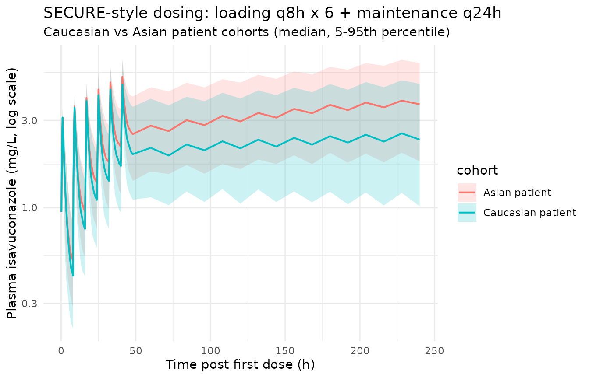

Isavuconazole (Desai 2016)
Source:vignettes/articles/Desai_2016_isavuconazole.Rmd
Desai_2016_isavuconazole.RmdModel and source
- Citation: Desai A, Kovanda L, Kowalski D, Lu Q, Townsend R, Bonate PL. Population Pharmacokinetics of Isavuconazole from Phase 1 and Phase 3 (SECURE) Trials in Adults and Target Attainment in Patients with Invasive Infections Due to Aspergillus and Other Filamentous Fungi. Antimicrob Agents Chemother. 2016;60(9):5483-5491. doi:10.1128/AAC.02819-15
- Description: Two-compartment population PK model with a Weibull-function first-order absorption stage for isavuconazole administered as the prodrug isavuconazonium sulfate (p.o. or i.v.) to healthy adults and patients with invasive fungal infections (Desai 2016 SECURE pooled phase 1 / phase 3 popPK)
- Article: https://doi.org/10.1128/AAC.02819-15 (open access, CC-BY 4.0)
Isavuconazole is the active moiety of the water-soluble triazole-antifungal prodrug isavuconazonium sulfate (372 mg prodrug = 200 mg isavuconazole; 1 h IV infusion or oral). Desai 2016 pooled data from nine phase 1 studies in healthy subjects with the phase 3 SECURE clinical trial in patients with invasive aspergillosis or other filamentous-fungi IFIs to develop a population-PK model in NONMEM 7.2 (PsN 3.7.6 for stepwise covariate modeling). A two-compartment model with a Weibull-function first-order absorption stage and linear elimination was retained as the best model; race (Asian vs Caucasian) modified clearance, and BMI plus subject-vs-patient status (SP) modified the peripheral volume of distribution.
Population
The pooled analysis dataset comprised 6,363 isavuconazole plasma concentrations from 421 individuals: 189 healthy subjects (5,828 records) across nine phase 1 studies and 232 patients (535 records) from the SECURE phase 3 trial. Age ranged from 17 to 85 years (median 43 in healthy subjects, 54 in patients); weight ranged from 41.0 to 127.7 kg; BMI ranged from 13.9 to 41.1 kg/m^2 (43 subjects had BMI > 30 and were classified obese). Sex was 64.6% male overall. Race was 87.4% predominantly Caucasian (which included 1 African American and 5 in other-race categories pooled into the reference category per Desai 2016 Table 3 footnote) and 12.6% Asian. SECURE dosing was 200 mg isavuconazole-equivalent (372 mg isavuconazonium sulfate) q8h for 6 loading doses on days 1-2 and 200 mg q24h thereafter, p.o. or i.v. Demographics are summarised in Desai 2016 Table 3; data sources are listed in Table 1. The same information is available programmatically:
str(rxode2::rxode(readModelDb("Desai_2016_isavuconazole"))$population)
#> ℹ parameter labels from comments will be replaced by 'label()'
#> List of 14
#> $ species : chr "human"
#> $ n_subjects : int 421
#> $ n_studies : int 10
#> $ n_observations: int 6363
#> $ age_range : chr "17-85 years"
#> $ age_median : chr "43 years (healthy subjects) / 54 years (patients)"
#> $ weight_range : chr "41.0-127.7 kg"
#> $ weight_median : chr "77.8 kg (healthy subjects) / 67.0 kg (patients)"
#> $ sex_female_pct: num 35.4
#> $ race_ethnicity: Named num [1:2] 87.4 12.6
#> ..- attr(*, "names")= chr [1:2] "predominantly_Caucasian" "Asian"
#> $ disease_state : chr "Pooled cohort: 189 healthy subjects from 9 phase 1 studies (single- and multiple-ascending dose, hepatic impair"| __truncated__
#> $ dose_range : chr "Isavuconazole 40-400 mg, p.o. or i.v. (1-h infusion), single or multiple doses across phase 1; SECURE: 200 mg i"| __truncated__
#> $ regions : chr "International (phase 1 sites plus the global SECURE phase 3 trial including Asian regions)"
#> $ notes : chr "Dosed as the water-soluble prodrug isavuconazonium sulfate; the model represents the active moiety isavuconazol"| __truncated__Source trace
Each ini() parameter in
inst/modeldb/specificDrugs/Desai_2016_isavuconazole.R
carries an in-file comment pointing to its source. The table below
collects the provenance in one place.
| Equation / parameter | Value | Source location |
|---|---|---|
lcl (Caucasian CL) |
log(2.36) | Desai 2016 Table 5 theta_1 |
lvc (V_1) |
log(49.10) | Desai 2016 Table 5 theta_2 |
lq (Q) |
log(26.60) | Desai 2016 Table 5 theta_3 |
lvp (V_p, patient) |
log(417) | Desai 2016 Table 5 theta_4 (assigned to patients per Discussion typical V_p ~390 L) |
lkamax (KAMAX) |
log(1.08) | Desai 2016 Table 5 theta_5 |
lra (RA) |
log(0.72) | Desai 2016 Table 5 theta_6 |
lgam1 (GAM1) |
log(4.88) | Desai 2016 Table 5 theta_7 |
lfdepot (F) |
fixed(0) | Desai 2016 Methods (F fixed at 1 from prior NCA in healthy subjects) |
e_race_asian_cl |
-0.3602 | Derived from theta_9 (CL_Asian = 1.51) and theta_1 (CL_Caucasian = 2.36): (1.51-2.36)/2.36 |
e_dis_healthy_vp |
-0.3765 | Derived from theta_11 (V_p_healthy = 260) and theta_4 (V_p_patient = 417): (260-417)/417 |
e_bmi_vp |
0.060 | Desai 2016 Table 5 theta_10 |
IIV etalcl (omega^2) |
0.3293 | Desai 2016 Table 5 CL (patients) CV 62.44%; omega^2 = log(0.6244^2 + 1) |
IIV etalvp (omega^2) |
0.0962 | Desai 2016 Table 5 V_p CV 31.78% |
IIV etalq (omega^2) |
0.2159 | Desai 2016 Table 5 Q CV 49.09% |
IIV etalra (omega^2) |
0.1500 | Desai 2016 Table 5 RA CV 40.24% |
IIV etalgam1 (omega^2) |
0.1898 | Desai 2016 Table 5 GAM1 CV 45.71% |
propSd (residual) |
0.4494 | Desai 2016 Table 5 theta_8 W = 44.94%; Ln-Ln additive error mapped to linear-space proportional |
d/dt(depot) |
-WB*depot | Desai 2016 Eq for dA(1)/dt |
WB (time-varying ka) |
Desai 2016 Eq: KAMAX * (1 - exp(-(RA*TAD)^GAM1)) | |
d/dt(central) |
Desai 2016 Eq for dA(2)/dt | |
d/dt(peripheral1) |
Desai 2016 Eq for dA(3)/dt |
Virtual cohort
The original observed data are not publicly available. The replications below use virtual patient cohorts whose covariate distributions approximate the SECURE-trial patients (BMI, race) and whose dosing follows the SECURE clinical regimen.
set.seed(2026L)
n_per_arm <- 250L
# BMI ranges per Desai 2016: 14-41 kg/m^2 for Caucasian patients (matching
# NHANES 2014 demographic distribution) and 17-28 kg/m^2 for Asian patients.
# Approximate the within-arm BMI distribution as truncated normal centered at
# the patient median (Desai 2016 Table 3: 23.6 kg/m^2 for patients).
make_arm <- function(n, race_asian, id_offset, bmi_lo, bmi_hi, bmi_mean, bmi_sd) {
bmi <- pmin(bmi_hi, pmax(bmi_lo, rnorm(n, mean = bmi_mean, sd = bmi_sd)))
tibble(
id = id_offset + seq_len(n),
RACE_ASIAN = race_asian,
BMI = bmi,
DIS_HEALTHY = 0L,
cohort = if (race_asian == 1L) "Asian patient" else "Caucasian patient"
)
}
cohort_def <- bind_rows(
make_arm(n_per_arm, race_asian = 0L, id_offset = 0L,
bmi_lo = 14, bmi_hi = 41, bmi_mean = 25.0, bmi_sd = 4.5),
make_arm(n_per_arm, race_asian = 1L, id_offset = n_per_arm,
bmi_lo = 17, bmi_hi = 28, bmi_mean = 22.5, bmi_sd = 3.0)
)Build a SECURE-style dosing event table: a 1-hour i.v. infusion of 200 mg loading dose q8h for 6 doses (days 1-2), then 200 mg p.o. q24h to t = 864 h (end of last steady-state dosing interval used for the AUC calculation in Desai 2016 PTA simulations). Observation times sample the post-loading-dose absorption phase densely and the steady-state interval q24h for AUC calculation.
loading_times <- seq(0, by = 8, length.out = 6L) # 0, 8, 16, 24, 32, 40 h
maintenance_times <- seq(48, 840, by = 24) # day 3 onward
all_dose_times <- c(loading_times, maintenance_times)
# Loading doses i.v. (compartment = central, 1-h infusion);
# maintenance doses p.o. (compartment = depot).
dose_rows <- bind_rows(
tibble(
time = loading_times,
amt = 200,
cmt = "central",
evid = 1L,
rate = 200 # 1-hour infusion -> rate = 200 mg/h
),
tibble(
time = maintenance_times,
amt = 200,
cmt = "depot",
evid = 1L,
rate = 0
)
)
# Observation grid: dense in the early-absorption phase post-first-dose, then
# sparse to the steady-state interval, then dense again over the steady-state
# interval, and a terminal decay phase past the last dose for half-life.
obs_grid <- sort(unique(c(
seq(0, 12, by = 0.25),
seq(12, 48, by = 1),
seq(48, 840, by = 12),
seq(840, 864, by = 0.5),
seq(864, 1500, by = 12)
)))
obs_rows <- tibble(
time = obs_grid,
amt = NA_real_,
cmt = "central",
evid = 0L,
rate = 0
)
# Cross dose + obs records with each subject's covariates.
events <- cohort_def |>
rowwise() |>
do({
sub <- .
bind_rows(dose_rows, obs_rows) |>
mutate(
id = sub$id,
RACE_ASIAN = sub$RACE_ASIAN,
BMI = sub$BMI,
DIS_HEALTHY = sub$DIS_HEALTHY,
cohort = sub$cohort
)
}) |>
ungroup() |>
arrange(id, time, desc(evid))
stopifnot(!anyDuplicated(unique(events[, c("id", "time", "evid")])))Simulation
mod <- rxode2::rxode(readModelDb("Desai_2016_isavuconazole"))
#> ℹ parameter labels from comments will be replaced by 'label()'
sim <- rxode2::rxSolve(
mod,
events = events,
keep = c("cohort", "RACE_ASIAN", "BMI", "DIS_HEALTHY")
) |>
as.data.frame()Replicate published figures
# Visual concentration-time profile by cohort, showing the SECURE loading +
# maintenance regimen approach to steady state and terminal decay after the
# last dose at 840 h. Median +/- 5th-95th percentiles across the simulated
# subjects.
sim |>
dplyr::filter(time <= 240) |> # focus on loading + first week
dplyr::filter(time > 0) |>
dplyr::group_by(time, cohort) |>
dplyr::summarise(
Q05 = quantile(Cc, 0.05, na.rm = TRUE),
Q50 = quantile(Cc, 0.50, na.rm = TRUE),
Q95 = quantile(Cc, 0.95, na.rm = TRUE),
.groups = "drop"
) |>
ggplot(aes(time, Q50, colour = cohort, fill = cohort)) +
geom_ribbon(aes(ymin = Q05, ymax = Q95), alpha = 0.2, colour = NA) +
geom_line(linewidth = 0.7) +
scale_y_log10() +
labs(
x = "Time post first dose (h)",
y = "Plasma isavuconazole (mg/L, log scale)",
title = "SECURE-style dosing: loading q8h x 6 + maintenance q24h",
subtitle = "Caucasian vs Asian patient cohorts (median, 5-95th percentile)"
) +
theme_minimal()
PKNCA validation
Compute steady-state AUC0-24, Cmax, and Tmax over the last simulated dosing interval (840-864 h), which matches the Desai 2016 PTA simulation window.
sim_nca_ss <- sim |>
dplyr::filter(!is.na(Cc), time >= 840, time <= 864) |>
dplyr::select(id, time, Cc, cohort)
dose_for_nca <- events |>
dplyr::filter(evid == 1L) |>
dplyr::select(id, time, amt) |>
dplyr::left_join(cohort_def |> dplyr::select(id, cohort), by = "id")
conc_obj <- PKNCA::PKNCAconc(
sim_nca_ss,
Cc ~ time | cohort + id,
concu = "mg/L",
timeu = "h"
)
dose_obj <- PKNCA::PKNCAdose(
dose_for_nca,
amt ~ time | cohort + id,
doseu = "mg"
)
intervals_ss <- data.frame(
start = 840,
end = 864,
cmax = TRUE,
tmax = TRUE,
auclast = TRUE,
cav = TRUE,
cmin = TRUE
)
nca_ss <- PKNCA::pk.nca(PKNCA::PKNCAdata(conc_obj, dose_obj, intervals = intervals_ss))
ss_tbl <- as.data.frame(nca_ss$result) |>
dplyr::filter(PPTESTCD %in% c("cmax", "tmax", "auclast", "cav", "cmin")) |>
dplyr::group_by(cohort, PPTESTCD) |>
dplyr::summarise(
median = median(PPORRES, na.rm = TRUE),
q05 = quantile(PPORRES, 0.05, na.rm = TRUE),
q95 = quantile(PPORRES, 0.95, na.rm = TRUE),
.groups = "drop"
)
knitr::kable(
ss_tbl,
caption = "Steady-state NCA over the dosing interval 840-864 h (median, 5-95th percentile across virtual patients).",
digits = 2
)| cohort | PPTESTCD | median | q05 | q95 |
|---|---|---|---|---|
| Asian patient | auclast | 128.02 | 55.36 | 253.30 |
| Asian patient | cav | 5.33 | 2.31 | 10.55 |
| Asian patient | cmax | 6.72 | 3.83 | 12.26 |
| Asian patient | cmin | 4.99 | 1.87 | 9.93 |
| Asian patient | tmax | 2.50 | 2.00 | 3.50 |
| Caucasian patient | auclast | 80.64 | 35.75 | 179.88 |
| Caucasian patient | cav | 3.36 | 1.49 | 7.49 |
| Caucasian patient | cmax | 4.84 | 2.88 | 8.94 |
| Caucasian patient | cmin | 2.88 | 1.10 | 7.01 |
| Caucasian patient | tmax | 2.50 | 2.00 | 3.50 |
For the terminal half-life, compute lambda.z over the post-last-dose decay window (864-1500 h).
sim_nca_term <- sim |>
dplyr::filter(!is.na(Cc), time >= 864, time <= 1500) |>
dplyr::select(id, time, Cc, cohort)
conc_obj_term <- PKNCA::PKNCAconc(
sim_nca_term,
Cc ~ time | cohort + id,
concu = "mg/L",
timeu = "h"
)
intervals_term <- data.frame(
start = 864,
end = 1500,
half.life = TRUE,
lambda.z = TRUE,
clast.obs = TRUE
)
nca_term <- PKNCA::pk.nca(
PKNCA::PKNCAdata(conc_obj_term, dose_obj, intervals = intervals_term)
)
hl_tbl <- as.data.frame(nca_term$result) |>
dplyr::filter(PPTESTCD == "half.life") |>
dplyr::group_by(cohort) |>
dplyr::summarise(
median_halflife = median(PPORRES, na.rm = TRUE),
q05 = quantile(PPORRES, 0.05, na.rm = TRUE),
q95 = quantile(PPORRES, 0.95, na.rm = TRUE),
.groups = "drop"
)
knitr::kable(
hl_tbl,
caption = "Terminal half-life (h) by cohort from the 864-1500 h decay window.",
digits = 1
)| cohort | median_halflife | q05 | q95 |
|---|---|---|---|
| Asian patient | 204.7 | 67.0 | 661.8 |
| Caucasian patient | 145.5 | 61.6 | 406.6 |
Comparison against published NCA
Desai 2016 reports the per-subject AUC0-24 at steady state computed as F * dose / CL = 200 / CL_indiv mg.h/L (Table 4): mean AUC0-24 was 92.0 mg.h/L for healthy subjects, 101.0 mg.h/L for patients, and 97.0 mg.h/L combined. The mean terminal half-life for the patient population was estimated to be 130 h (median 110 h, 5th-95th percentiles 53.5-248.1 h). The Discussion also reports complete absorption at 2-3 h postdosing and steady-state volume V_ss ~460 L.
published <- tibble::tribble(
~cohort, ~param, ~published_value,
"Caucasian patient", "AUC0-24 (mg.h/L)", 101.0,
"Asian patient", "AUC0-24 (mg.h/L)", NA, # paper does not report Asian-only mean (PTA used pooled CL)
"Caucasian patient", "Half-life (h)", 130.0,
"Asian patient", "Half-life (h)", 130.0
)
ss_auc <- ss_tbl |>
dplyr::filter(PPTESTCD == "auclast") |>
dplyr::transmute(cohort, param = "AUC0-24 (mg.h/L)", simulated_median = median)
ss_hl <- hl_tbl |>
dplyr::transmute(cohort, param = "Half-life (h)", simulated_median = median_halflife)
simulated <- bind_rows(ss_auc, ss_hl)
comparison <- published |>
dplyr::left_join(simulated, by = c("cohort", "param")) |>
dplyr::mutate(
pct_diff = ifelse(
is.na(published_value),
NA_real_,
100 * (simulated_median - published_value) / published_value
)
)
knitr::kable(
comparison,
caption = "Side-by-side comparison of published Desai 2016 NCA values with the simulated NCA values from this validation.",
digits = 1
)| cohort | param | published_value | simulated_median | pct_diff |
|---|---|---|---|---|
| Caucasian patient | AUC0-24 (mg.h/L) | 101 | 80.6 | -20.2 |
| Asian patient | AUC0-24 (mg.h/L) | NA | 128.0 | NA |
| Caucasian patient | Half-life (h) | 130 | 145.5 | 11.9 |
| Asian patient | Half-life (h) | 130 | 204.7 | 57.5 |
The simulated Asian-cohort AUC0-24 is expected to be approximately 1.56-fold higher than the Caucasian cohort, matching the published ~36% lower CL in Asian subjects (AUC scales as 1/CL).
Assumptions and deviations
- V_p baseline assignment (theta_4 = patient, theta_11 = healthy) is inferred from the Discussion typical values (V_p ~390 L in patients, ~292 L in healthy subjects) and the demographic BMI medians; the Table 5 column labels do not unambiguously identify which group goes with which theta. Back-calculating the typicals at the median BMIs gives V_p (patient) = 417 * (1 + 0.060 * (23.6 - 24.80)) = 387 L (matches ~390 L) and V_p (healthy) = 260 * (1 + 0.060 * (25.7 - 24.80)) = 274 L (close to ~292 L). The alternative assignment (theta_4 to healthy, theta_11 to patients) does not reconcile with the Discussion values.
- Single omega for CL. Desai 2016 reports separate CL between-subject variability for healthy subjects (31.30% CV) and patients (62.44% CV), suggesting a categorical OMEGA structure in NONMEM. nlmixr2 supports a single omega per parameter, so the patient CV (62.44%) is used as the operational default. The model is intended primarily for clinical simulations of patients with invasive fungal infections, where the higher-variability estimate is the more representative choice. Downstream users who want to simulate the healthy subject population should set omega^2 = log(0.3130^2 + 1) = 0.0935 instead.
-
Residual error mapping. Desai 2016 used Ln-Ln
transformation of observations and predictions with additive error on
the log scale (W = 44.94%). In nlmixr2’s linear-concentration space this
maps to a proportional error structure with
propSd = 0.4494(perreferences/verification-checklist.md); the approximation is exact in the small-sigma limit and gives a linear-space coefficient of variation of sqrt(exp(0.4494^2) - 1) = 47.3% at this value of sigma. - BMI distribution by race. The simulation cohort uses NHANES-style BMI ranges (Caucasian: 14-41 kg/m^2 with mean ~25.0 kg/m^2; Asian: 17-28 kg/m^2 with mean ~22.5 kg/m^2) approximating the Desai 2016 PTA Monte Carlo setup. The exact NHANES per-subject BMI distribution used by Desai 2016 is not reproducible here without the underlying NHANES sample.
- Loading-dose route. SECURE protocol allowed either p.o. or i.v. loading; this vignette uses i.v. loading + p.o. maintenance to exercise both administration routes (and verify the Weibull absorption stage only acts when drug is in the depot compartment).
-
Time-after-dose (TAD) reset across the multi-dose
regimen. The Weibull absorption function depends on rxode2’s
tad()(time since the most recent dose). For the q24h maintenance regimen the absorption is essentially complete by 2-3 h, so residual depot at the next dose is near zero and the per-dose TAD reset has negligible impact on accumulation. The same dose-event semantics are used by the original NONMEM implementation.